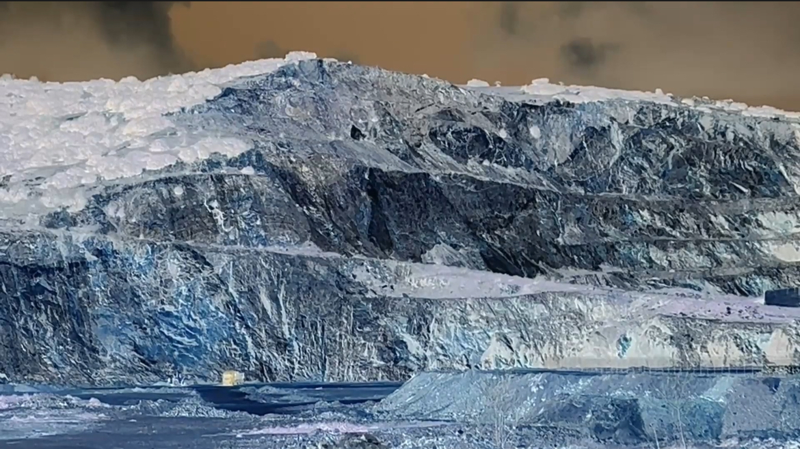
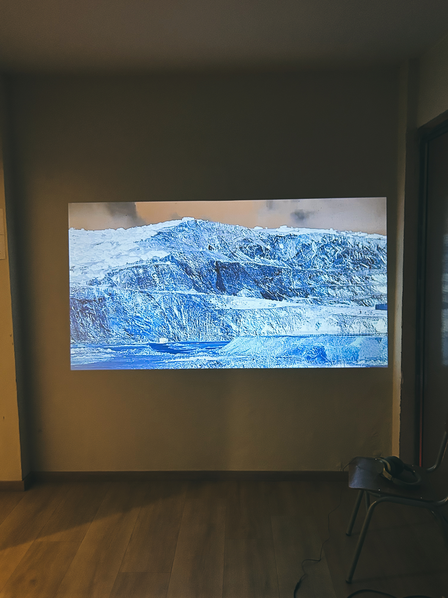

A Dance on the Mountain

A Dance on the Mountain is a study in geological empathy. The quarry stands as a monument to our violent intervention in the body of the planet. Removing stone is not simply industrial production; it is an amputation. The only presence is sound. It rules over the mountain, speaks with it, and becomes the mountain’s breath.
We have stopped listening to the earth. To listen to a landscape is already a form of care.
By call of the void, with a music piece and video art, in Public Without Permission in a post-digital age, Bowie House, Thessaloniki, until 12 July 2026.
